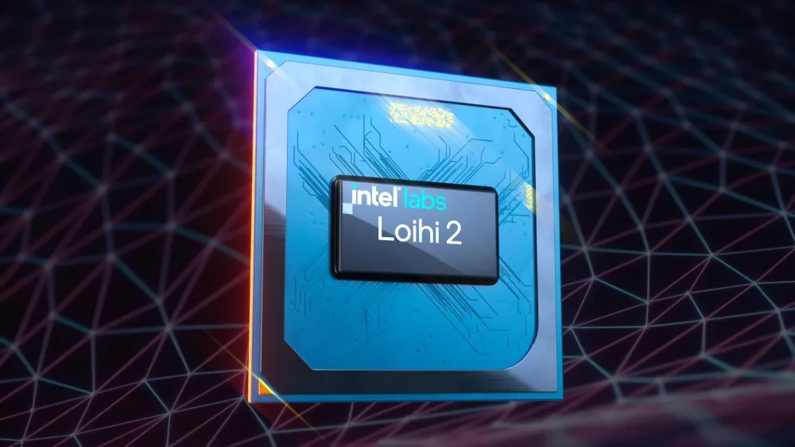

AI-Application
Table of Contents
1. AlphaGo, AlphaZero與AlphaFold
DeepMind使用該公司在AlphaGo和AlphaZero系統中首創的人工智慧技術，打敗全球頂尖的圍棋好手，同樣的技術被AlphaFold用來預測蛋白質分子如何折疊成其最終的形狀，而蛋白
質分子的形狀卻正是它們發揮重要作用的關鍵，其形狀由分子在細胞內成形，幾毫秒內自動摺疊而成、高度複雜的三維結構所決定。
圍棋下法的可能性超過宇宙中各分子個數，蛋白質分子的各種排列的可能性也有無限多種，兩種應用狀況十分類似。AlphaFold預測蛋白質分子形狀能力的準確性可以和昂貴、耗時且使用像是X射線晶體學等技術的實驗室測量出的結果相匹敵。
DeepMind的技術有望在不同領域帶來進步，包括設計出全新的藥物，以及對蛋白質錯誤折疊的方式可以有更多的認識，而蛋白質錯誤折疊與糖尿病、阿茲海默症和袙金森氏症等疾病都有關。這項技術也可能有一天會被應用在醫學以外的各種領域，例如，幫助設計出某種微生物，能夠分泌出可以分解塑料等廢棄物的蛋白質1。
2. 深度學習的進展關鍵
人類已經理解深度學習神經網路的基本原理幾十年了，但是最近才有了戲劇性的進展，原因來自以下兩個因素2：
- 功能更強大的電腦的出現，讓神經網路第一次成為有用的工具。
- 資訊經濟所生成與收集的龐大數據，成為訓練這些網路執行實用任務的關鍵資源。
3. 可能會被AI取代的工作
人工智慧可能以前所未見的程度顛覆就業市場與整體經濟3
3.1. 短期中最不容易受到自動化影響的三類工作
- 真正具有創造性的工作可能相對安全，如果你總是跳出傳統的思維框架、想出創新的策略來解決無法預見的問題，或者創造真正的新事物，那你就能善用人工智慧作為你的新工具，也就是讓AI輔助你，而非取代你。
- 那些重視與他人建立有意義且複雜關係的工作，例如醫病關係、業務或顧問與客戶關係，這裡指的是需要更深竹且更複雜的人際互動的服務。
- 在不可預測的環境中具有出眾的行動力、靈巧性和解決問題能力的職業。護士和老人的照顧、水管工、電工和機械師產業亦屬此類。
4. 中國與AI監控政府的興起
- 中國的學術或商業AI研究與該國的政治、軍事和安全機構之間只存在一條非常模糊的分界線。
- 中國最重要的優勢在於經濟活動產生的數據量和類型
- 2017年，為了響應習維尼親自提出的策略，中國修改了憲法，明確要求在商業領域產生的任何科技進展，都必須與中國人民解放軍共享，這就是著名的「軍民融合」原則。
- 如果像Google這樣的公司不願意與美國的軍事和國安機構合作，而在中國的同業卻有協助中國威權政權的義務，這種義務如此明確甚至寫入了國家的憲法，這樣的狀況下，美國該如何在國家安全的基礎上進行競爭？
- 手中國持續加重力道建立針對其轄區的監視網，警察單位經常將臉部識別系統與其他技術相結合做使用，例如手機掃瞄機會偵測通過附近的每部手機唯一的一組識別碼，以及汽車車牌辨識系統和指紋識別技術一起編織成一個歐威爾式的社會。
- 在其他情況下，中國以在西方無法想像的方式侵犯了道德界限。例如，一些警察部門提出了具體的需求，要求監視系統技術不是設計成識別個人的臉孔，而是識別維吾爾人或其他「敏感族群」的種族特徵。2019年4月紐約時報發表了一篇由Paul Mozer撰寫的報導，中國從雲科技向其技術的潛在買家承諾如果「在鄰里內的敏感族群人數增加(例如，如果最初只有一個維吾爾人住在一個社區，卻在二十天內出現六個維吾爾人)，它會立即發出警報，以便法律執法人員可以回應，盤問這些人並處理情況，以制定出應急的計畫」。6
5. 通用技術(general purpose techologies, GPT)
某種跨越經濟體與社會並在各方面都改變了經濟與社會的創新，電力和資訊技術 (IT) 可能是迄今為止最重要的兩個 GPT。電力與IT的比較7：
- 兩個GPT時代的生產力成長往往低於其他時期，生產力放緩發生在兩個時代之初，而IT時代的放緩程度比電氣化時期更為嚴重。
- 兩種 GPT 都得到了廣泛採用，但電力在各個行業的採用速度更快、更統一。
- 兩者在被採用後都得到了改善，但從其相對價格下降來衡量，IT 的改善速度比電力快得多。
- 兩者都催生了創新，但在這方面，從專利和商標的數量來看，IT 也主導了電力產業。
- 兩者都伴隨著「創造性破壞」和動盪的增加，可以透過企業的進入和退出、併購和收購以及證券交易所估值的變化來衡量。
人工智慧就像電力一樣，最終將影響並改變幾乎所有的事物8。
6. Nvidia
從2012年1月到2020年1月，輝達的股票上升了1500%以上。
7. Neuromorphic晶片:Loihi
為了更接近於模仿大腦，新興的神經形態晶片在很大程度上拿掉了非常消耗資源的軟體層，在硬體中執行神經系統9。Intel於2017年推出旗下首款具備自我學習能力的Loihi處理器，並且在去年以768組Loihi處理器打造「Pohoiki Springs」運算模組，藉此模擬等同小型哺乳類動物大腦規模「思考能力」後，Intel宣布推出Loihi 2處理器，並且確定以日前公布預計在2022年下旬進入的Intel 4製程生產10。

Figure 1: Intel Loihi 2處理器
Intel表示，相比第一款Loihi處理器在Lava模擬環境下的算力表現，約可提昇10倍以上。同時，Loihi 2處理器核心內有100萬個硬體神經元11，在運算密度相對提昇15，可對應規模更大的運算，同時也能對應即時調整、規劃，並且做出決策，分別可佈署於邊緣運算或是數據中心使用。而在人工智慧運算部分也能接續原本「思考」內容，或是進行額外聯想分析，推論效率更比前一代Loihi處理器增加60倍，並且能有更高運算精準度。
Loihi 2處理器也能無縫地應用在機器人裝置，並且搭配新版Lava運算框架軟體運作，藉此發揮更高人工智慧運算效率。
而除了以晶片形式嵌入使用，Intel也計畫推出同時配置一組Arria 10 FPGA晶片，並且可透過Ethernet網路連接埠串接的「Oheo Gulch」單卡設計，另外則包含以8組Loihi 2處理器構成、代號「Kapoho Point」的運算設計，甚至「Kapoho Point」更具備堆疊串接特性，因此將能構成更龐大的算力規模。
8. 雲端運算
到2016年，Amazon每天必須納入其系統(AWS)的運算資源量，已經大致相當於該公司在2005年底所擁有的所有資源量土。
9. Google冷卻系統
DeepMind的神經網路透過分在於Google代管設施中的傳感器所收集的大量數據來進行訓練，已經能夠做到將用於冷卻的耗能減少多達40%。雖然數據中心所完成的計算量在2010年到2018年之間增加了550%，但是在同個時間，數據中心所消耗的能源僅增加了6%12。
10. 數據的價值
Meta, Google願意免費開放TensorFlow與PyTorch等深度學習技術，但絕不會免費贈送數據，幾乎所有因AI生產的價值都將落入接有數據的人手中。
重要數據的來源13:
- 金融交易
- 旅行相關的預訂與網路評論
- 消費者在實體零售店內的流動動向: 每輛特斯拉配備了八組持續運作的攝影鏡頭，捕捉車輛四周的道路與環境的影響。車上搭載的電腦會檢視這些影響，決定哪些是公司可能會需要的，然後以壓縮格式上傳到特斯拉的網路。2023年特斯接預計的年銷售量為180萬輛。
- 交通工具與工業機械的感測器
11. 自動駕駛與數據
12. 通用智慧的困難
要瞭解真正功能齊全的家用機器人的門檻有多高，可以想像一下一個任務：從冰箱中取出啤酒(假設沒有樓梯或關上的門這類障礙)15。
- 要能打開冰箱門：要出多大的力氣，這和機器人體重、冰箱大小有關
- 要定位啤酒的位置：如果啤酒在吃剩的外賣食物後面怎麼辦?
- 啤酒的包裝：如果啤酒是在塑膠套環中或紙箱中要如何處理?
人類能簡單應付拿起桌上的鐵球與雞蛋這種任務，即便矇住眼睛也能透過觸覺來決定使用力氣，但機器人很難應付這類局面。
13. 倉庫與工廠: 機器人革命的起點
真實世界要面臨的環境因素太過複雜，若能在封閉環境中實驗，可排除許多困難，這也是為什麼倉庫或工廠是最先出現機器人的地方，也是為什麼許多比賽環境看起來那麼無趣的原因。
13.1. Amazon的倉儲機器人16
Amazon的全球倉儲中心有數十萬台搬運機器人，比一個標準的㨂貨員在一小時內可拿貨品多了三到四倍，但機器人並未取代工人，反而帶來更多人力需求：需要執行現階段機器人無法完成的、需要視覺和靈巧性的任務(例如：拿起一袋橘子)。一旦機器人在抓取和操縱物品的能力能達到人類的水準，全面自動化就真正到來。
另一個原因是：一個成功率達到50%的倉儲機器人可能就很實用，但一輛安全性達99%的自駕車卻是災難。
14. 醫療
14.1. 查錯
在2019的研究中，以色列新創公司MedAware的人工智慧軟體應用於波士頓布萊根婦女醫院從2012年到2013年近75萬名病患的歷史數據，該系統標記了近1.1萬個錯誤(根據某種說法，醫療疏失是美國第三大死因，僅次於癌症和心臟病)17。
14.2. 心理健康
2017年的矽谷新創公司Woebot Labs開發了一種由自然語言處理技術驅動的聊天機器人，並結合由心理學家所設計、精心編寫的對話元素，這本質上是將認知行為療法自動化，這套方法已證實可以幫助患有憂鬱或焦慮的人。
15. 硬體
15.1. 摩爾定律
隨著印在晶片上的電路尺寸縮小到接近原子大小，我們對摩爾定律的傳統定義也正在走向䀆頭。
16. 通用
16.1. 空氣動力學
雖然飛機很顯然是受到鳥類的啟發，但它們當然不會拍打翅膀或試圖直接模仿鳥類飛行，而是製造出根據與鳥類飛行相同的基本原理而運入的機器。也就是，智慧的空氣動力學。
16.2. 神經網路
同樣的，類神經網路是受到人類腦神經運入原理而得到的啟發，那麼，是否存在著同樣的、更通用的神經網路學
16.3. 真實語言的理解
解決語言理解問題代表一條通往更通用智慧最清晰的途徑，AI新創公司Elemental Cognition執行長兼創辦人大衛·費魯奇認為「我們要探討的方向是突破語言的表面結構、超越字詞頻率中出現的模式，然後取得潛在所蘊含的意義。
17. OpenAI
OpenAI是一家總部位於舊金山的研究機構，成立於2015年，得到了伊隆・馬斯克、彼得・泰爾和Linkedin聯合創辦人Reid Hoffman等人的資金支持。OpenAI最初是一個非營利組織，2019年7月微軟宣布將投資10億美元，2019年2月OpenAI展示了名為GPT-2的強大自然語言系統這套神經網路包含了大約15億個參數，而且這些參數在網路訓練時都經過優化。，其連貫性強大到OpenAI出於擔心這套系統可能濫用而拒絕像其先前的許多研究那樣與他人共享GPT-2的程式碼。
2020年5月OpenAI發布了GPT-3，其參數個數達到1750億個參數，GPT-3以大約0.5兆Byte的文本做訓練，其文本數量龐大到連英文版維基百科(大約600萬篇文章)僅佔總數的0.6%左右18。